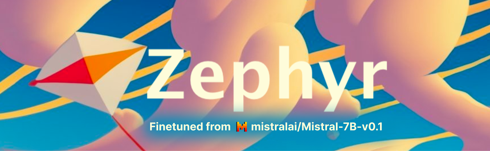

Large Language Models - Chatting with AI Chatbots from Google, Mistral AI, and Hugging Face
Using Streamlit and Hugging Face to chat with Gemma, Mistral, and Zephyr

Show me the demo!
Jump straight to the chatbot demo
LLMs
Large language models (LLMs) have become widespread and accessible. Hugging Face has helped accelerate the accessibility and use of these models by aggregating them in one place and creating helpful APIs1 to use them.
1 API - Application programming interface
Here, we’ll use Streamlit to look at some of the state-of-the-art LLMs on Hugging Face that can be easily set-up for quick inference in a chatbot interface:
- Mistral 7B
- Gemma 7B and 2B
- Zephyr 7B-β
LLMs what are they good for?
Large language models (LLMs) are powerful AI systems that can generate natural language texts based on a given input. They’ve been used for a number of tasks in the field of natural language processing (NLP)2. These have included text summarization, translation, sentiment analysis (e.g. tell you if your text has a positive or negative sentiment), etc.
2 NLP -Natural Language Processing
3 These are AI models that you can prompt with questions
One of the most exciting applications of LLMs has been the creation of interactive question and answer chatbots3. These have been used to augment writing, have conversations, help generate code, and more! If you’ve tried OpenAI’s ChatGPT then you know how powerful a tool LLMs can be.
LLMs how do they work?
LLMs work through a number of different complex steps (greatly oversimplified):
Words are first converted into high dimensional numeric vectors, representing their semantic meanings. Think of techniques like Word2Vec or GloVe4. These vectors embed different dimensions of meaning that correspond to each word5.
These vectors are fed into a massive machine learning model (typically a Transformer architecture) that learns patterns, probabilities, and relationships between words.
This training enables the model to generate coherent and contextually relevant text, based on new input it receives.
4 GloVe - Global Vectors for Word Representation
5 Jay Alammar does a great job explaining it here.
What is Gemma?
Gemma is described as a family of lightweight models. It was developed by DeepMind and other teams at Google. These models were used to create Google’s Gemini models. The name of the model comes from the Latin word gemma, translating to ‘gem’ or precious stone.
The open source Gemma model is based on the transformer decoder architecture and comes in two sizes: a 7B and 2B. These represent the number of parameters that each model has, which are actually 7,751,248,896 (7B) and 1,981,884,416 (2B). On benchmarks the Gemma model performs on par or better than the LLaMA and Mistral models. You can check out the interactive benchmark comparisons here.
One thing to note is that the current 7B Hugging Face implementation of the Gemma model may have some hiccups, which are being looked into by the Hugging Face team6 so use it with caution.
What is Mistral?

Mistral was created by the Paris-based Mistral AI team. The founders of the team came from Meta Platforms and Google’s DeepMind. Similar to the Gemma model the Mistral model (specifically the Mistral-7B model) is based on the transformer architecture and has about 7 billion parameters. The name Mistral presumably comes from the term describing strong, cold, winds that blow through France from south to the Mediterranean.
What is Zephyr?

The Zephyr models are a series of models that were fine-tuned by the team at Hugging Face. The Zephyr 7B-β model is the second of (currently) 3 models and is a fine-tuned version of the Mistral 7B model. The idea behind model fine-tuning is to improve the accuracy of the models. In this case the Mistral model was additionally fine-tuned with AI feedback (AIF). Similar to the term mistral the word zephyr refers to a soft, gentle breeze.
One of the latest Zephyr models, Zephyr 7B Gemma is a fine-tuned version of the Gemma model by Google, however it has not yet been configured for inference on Hugging Face. There is an interactive demo available though, check it out here.
Setting Up Models with Hugging Face and Streamlit
Hugging Face hosts a number of open-source, pre-trained LLMs and allows you to directly interface with them through API calls. When getting started we’ll first need an API key7, which is free after creating a Hugging Face account.
7 It will be an alpha numeric code starting with hf
We first install all the libraries we’ll be using. We’ll use the OpenAI API to stream model output from but other APIs exist.
!pip install openai python-dotenvNext we assign the client interface that’ll be helping us with API calls to HuggingFace. If you’re using Hugging Face spaces be sure to add your Hugging Face API key to your secret codes in your space settings.
import streamlit as st from openai import OpenAI import os import sys from dotenv import load_dotenv, dotenv_values #This loads env variables like your API keys load_dotenv()We create a dictionary with the model names and their URLs.
#Create supported models model_links ={ "Mistral":"mistralai/Mistral-7B-Instruct-v0.2", "Gemma-7B":"google/gemma-7b-it", "Gemma-2B":"google/gemma-2b-it", "Zephyr-7B-β":"HuggingFaceH4/zephyr-7b-beta", }We’ll also create a dictionary with some info about the models.
#Pull info about the model to display model_info ={ "Mistral": {'description': """The Mistral model is a **Large Language Model (LLM)** that's able to have question and answer interactions...""", 'logo': 'https://mistral.ai/images/logo_hubc88c4ece131b91c7cb753f40e9e1cc5_2589_256x0_resize_q97_h2_lanczos_3.webp'}, "Gemma-7B": {'description': """The Gemma model is a **Large Language Model (LLM)** that's able to have question and answer interactions...""", 'logo': 'https://pbs.twimg.com/media/GG3sJg7X0AEaNIq.jpg'}, "Gemma-2B": {'description': """The Gemma model is a **Large Language Model (LLM)** that's able to have question and answer interactions...""", 'logo': 'https://pbs.twimg.com/media/GG3sJg7X0AEaNIq.jpg'}, "Zephyr-7B": {'description': """The Zephyr model is a **Large Language Model (LLM)** that's able to have question and answer interactions...""", 'logo': 'https://huggingface.co/HuggingFaceH4/zephyr-7b-gemma-v0.1/resolve/main/thumbnail.png'}, "Zephyr-7B-β": {'description': """The Zephyr model is a **Large Language Model (LLM)** that's able to have question and answer interactions...""", 'logo': 'https://huggingface.co/HuggingFaceH4/zephyr-7b-alpha/resolve/main/thumbnail.png'}, }Create a function that wipes the session conversation if a button is pushed
def reset_conversation(): ''' Resets Conversation ''' st.session_state.conversation = [] st.session_state.messages = [] return NoneWe configure the session settings in Streamlit and add some buttons.
# Define the available models models =[key for key in model_links.keys()] # Create the sidebar with the dropdown for model selection selected_model = st.sidebar.selectbox("Select Model", models) #Create a temperature slider temp_values = st.sidebar.slider('Select a temperature value', 0.0, 1.0, (0.5)) #Add reset button to clear conversation st.sidebar.button('Reset Chat', on_click=reset_conversation) #Reset button # Create model description st.sidebar.write(f"You're now chatting with **{selected_model}**") st.sidebar.markdown(model_info[selected_model]['description']) st.sidebar.image(model_info[selected_model]['logo']) st.sidebar.markdown("*Generated content may be inaccurate or false.*") st.subheader(f'AI - {selected_model}')We do some configurations to clean up our messages and make sure we have the model selected.
#Keep track of which model we're using if "prev_option" not in st.session_state: st.session_state.prev_option = selected_model #Clear conv if we change models if st.session_state.prev_option != selected_model: st.session_state.messages = [] st.session_state.prev_option = selected_model reset_conversation() #Pull in the model we want to use repo_id = model_links[selected_model] # Set a default model if selected_model not in st.session_state: st.session_state[selected_model] = model_links[selected_model] # Initialize chat history if "messages" not in st.session_state: st.session_state.messages = [] # Display chat messages from history on app rerun for message in st.session_state.messages: with st.chat_message(message["role"]): st.markdown(message["content"])Finally we set up the chat interface in Streamlit where the user’s questions or
promptgets passed on to the model we select and the model or theassistantreturns aresponse. We make sure to keep adding ourpromptandresponseto the messages structure we created so the model has some context to keep a conversation going.# Accept user input if prompt := st.chat_input(f"Hi I'm {selected_model}, ask me a question"): # Display user message in chat message container with st.chat_message("user"): st.markdown(prompt) # Add user message to chat history st.session_state.messages.append({"role": "user", "content": prompt}) # Display assistant response in chat message container with st.chat_message("assistant"): stream = client.chat.completions.create( model=model_links[selected_model], messages=[ {"role": m["role"], "content": m["content"]} for m in st.session_state.messages ], temperature=temp_values,#0.5, stream=True, max_tokens=3000, ) response = st.write_stream(stream) st.session_state.messages.append({"role": "assistant", "content": response})If we’re running this locally we can use
streamlit run app.pyor on Hugging Face wait for all parts to build automatically. When everything’s up and running the interface will look like below. On the left panel the drop-down lets us switch between models and the temperature slider let’s us adjust the model’s temperature value.
The full script can be found here.
What’s Next
The models on their own are very powerful but they only have information up to the time they were trained. To enhance the model’s capabilities in the future we can feed them updated or real-time information through processes called Retrieval-Augmented Generation (RAG).